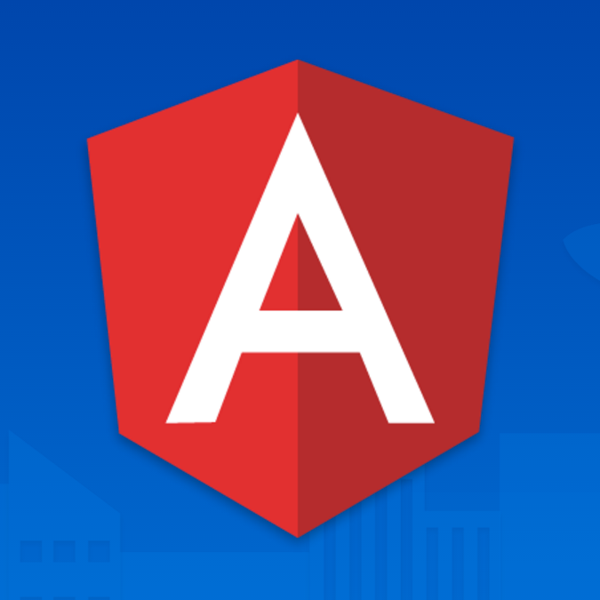
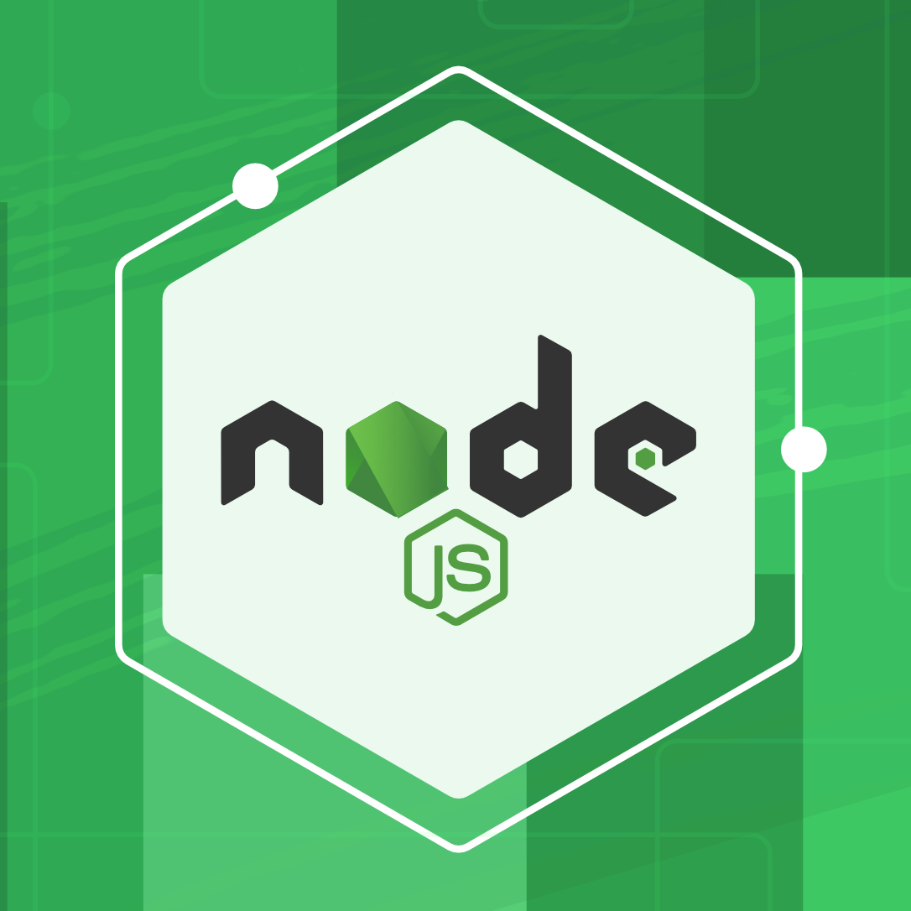
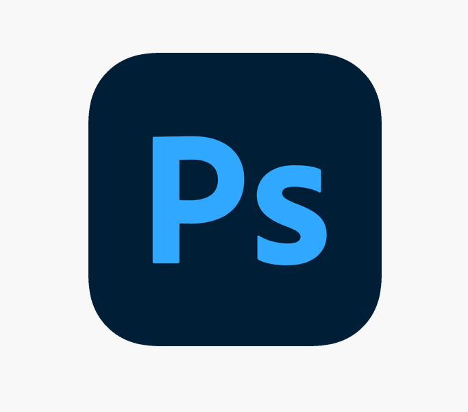

<div class="all">
    <div class="habilities">
        <mat-card-title class="title">Habilidades</mat-card-title>
        <mat-card class="cards">
            
            <mat-card-subtitle class="subtitle">Angular</mat-card-subtitle>
            <p>Tendo aprendido principalmente com os cursos da Cod3r, Loiane e outros cursos avulsos, minhas principais habilidades no desenvolvimento de sites estão relacionadas ao Angular.</p>
        </mat-card>
    
        <mat-card class="cards">
            
            <mat-card-subtitle class="subtitle">NodeJs</mat-card-subtitle>
            <p>Na utilização do Angular o NodeJs é uma ferramenta importante no auxílio do desenvolvimento de sites. Portanto, utilizo muito a ferramenta em meus projetos.</p>
        </mat-card>
    
        <mat-card class="cards">
            
            <mat-card-subtitle class="subtitle">HTML - SCSS - JavaScript</mat-card-subtitle>
            <p>Dispensando apresentações, a tríade do desenvolvimento é muito utilizada dentro da framework do Angular. Sobre esses três participei das aulas ministradas pelo professor Gustavo Guanabara no Curso Em Vídeo.</p>
        </mat-card>
    
        <mat-card class="cards">
            
            <mat-card-subtitle class="subtitle">Inglês</mat-card-subtitle>
            <p>Meu aprendizado em Inglês vem todo de um estudo autodidata, onde desenvolvi minha própria forma de aprender. No momento estou no Intermediário, lendo livros em Inglês para aparfeiçoar meu conhecimento.</p>
        </mat-card>
    
        <mat-card class="cards">
            
            <mat-card-subtitle class="subtitle">Linux</mat-card-subtitle>
            <p>Meu principal Sistema Operacional é o Linux, visto que ele é perfeito para o desenvolvimento. Já o utilizo há dois anos. </p>
        </mat-card>
    
        <mat-card class="cards">
            
            <mat-card-subtitle class="subtitle">Photoshop</mat-card-subtitle>
            <p>No ramo do desenvolvimento, muitas vezes nos deparamos com a necessidade de criar ilustrações, banners e logotipos. Não foram por esses motivos que me especializei no Photoshop, mas com certeza está sendo muito útil na criação de meu projetos.</p>
        </mat-card>
    </div>
</div>
